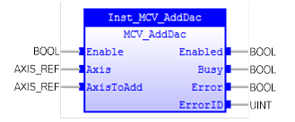

Adds the output from the servo control block of a secondary axis to the output of the base axis.

MCV_AddDac is used to add the output from the servo control block of a secondary axis to the output of the base axis. The resulting output of the base axis is then the sum of the two control loop outputs. This command is provided to allow a secondary encoder to be used on a servo axis to implement dual feedback control.
AxisToAdd has a position feedback sensor.
MCV_AddDac will not affect PLCopen state machine.
Make sure the input and output parameters are of data type indicated in the table below.
This would typically be used in applications such as a roll-feed where a secondary encoder to compensate for slippage is required.
An error will be generated when the base axis is changed during ‘Enable = TRUE’.
MCV_AddDac is equivalent to TrioBASIC command ADD_DAC . Please refer to TrioBasic Help for more information.
|
Name |
Data Type |
Description |
|
INPUTS |
||
|
Enable |
BOOL |
Enable execution. |
|
Axis |
AXIS_REF |
Reference to the secondary axis. |
|
AxisToAdd |
AXIS_REF |
Reference to the base axis |
|
OUTPUTS |
||
|
Enabled |
BOOL |
The FB execution is enabled. |
|
Busy |
BOOL |
Indicates that the FB has control on the axis |
|
Error |
BOOL |
Signals that an error has occurred within the FB |
|
ErrorID |
UINT |
Error identification |